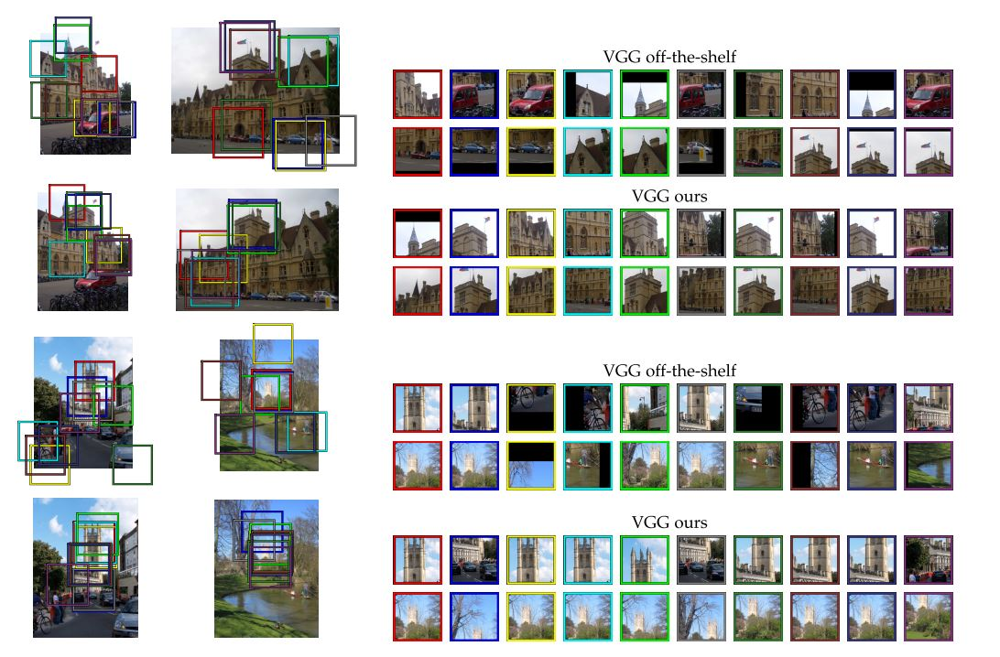

GeM Pooling Explained with PyTorch Implementation and Introduction to Image Retrieval
As part of this blog post we will be looking at GeM pooling and also look at the research paper Fine-tuning CNN Image Retrieval with No Human Annotation. We also implement GeM Pooling from scratch in PyTorch.
1 Introduction
As mentioned in the title, today we will be looking at GeM pooling and also look at the research paper Fine-tuning CNN Image Retrieval with No Human Annotation. Recently, I started to participate in Google Landmark Recognition 2020 Kaggle competition and as a result I have been reading lots of research papers related to large scale image retrieval and recognition. GeM Pooling featured in almost all of them [1], [2], [3]. Therefore, today we will look at GeM Pooling and understand how it is different from the common Max and Average pooling techniques.
We will also look at the Fine-tuning CNN Image Retrieval with No Human Annotation paper briefly and understand about some common ways of doing large scale image retrieval and recognition.
Finally, we also run our own little experiment to compare the performance of GeM Pooling with Average Pooling on PETs Dataset. In the experiment, we find that GeM Pooling doesn’t necessarily lead to performance gains on a classification task and a working notebook can be found here.
In this blog post, we touch upon the basics of image retrieval, and also understand GeM Pooling.
So, let’s get started.
2 Image Retrieval Overview
You might want to ask what is Image Retrieval? Why is it relevant and how is this of any importance?

Usually, when we do google image search, or we want to find similar images - this warrants a need to find similar images related to the query image. This task of finding similar images from a large scale unordered database of images is referred to as Image Retrieval. In fact Google Landmark Retrieval 2020 Kaggle competition is specific to the image retrieval task.
2.1 How does it work?
The idea is to extract global and local features from the image and perform matching/image similarity based on these extracted vectors. Typically, representing an image as a vector is as simple as extracting the output from a CNN just before the pooling layer. We do this for each image in the database and the query image. Finally, to get image similarity is as simple as performing a dot product between these vector representations and similar images have higher dot product value whereas non similar images have smaller dot-product values. Thus, given a query image, it is possible to find similar images from a large scale unordered database.
The complexity lies in having suitable/accurate vector representations for each image. To do this, it is possible to train a CNN to do image classification and then extract the image representations from this trained model.
To have appropriate image representations, a trained model must be able to distinguish similar images of the same class from non-similar images. Such a model could be trained as a Siamese network where it could be fed similar images by finding images with the same label class in the dataset and non-similar images by finding images with a different label.
For example, let’s say we have a dataset consisting of dogs, cats and horses with 10 images per label. A model could be trained by providing matching or non-matching image pairs. If two dog images are provided to the model, it should say output matching, whereas if an image of a dog and a cat are provided to the model, then it must be able to distinguish between the two and should say non-matching pair. Such a model can be trained as a Siamese network using Contrastive loss. (more about this later in the blogpost)
But, getting labelled data is costly. Could there be a workaround this?
3 Unsupervised matching and non-matching pairs
In the Fine-tuning CNN Image Retrieval with No Human Annotation research paper, the authors Radenovic et al dispense with the need for manually annotated data or any assumptions on the training dataset.
Basically, there is no longer a need for image labels to find similar images. Previously, we would look at image labels and feed two dog labelled images to the model and train it to say that these two images are a matching pair. And we would also feed the model with a dog and cat labelled image and train it to say that these two images are a non-matching pair.
Radenovic et al take away the need for image labels to find similar or non-similar images. They do this by using SfM pipeline [4].
From the paper, > We achieve this by exploiting the geometry and the camera positions from 3D models reconstructed automatically by a structure-from-motion (SfM) pipeline. The state- of-the-art retrieval-SfM pipeline takes an unordered image collection as input and attempts to build all possible 3D models.

From the image above, the SfM Pipeline can construct 3D models given an unordered database of images. A typical reconstruction process looks something like below:

As seen in the image above, it is possible to reconstruct detailed 3D models from unordered photo collections. This is done using local spatial verification and more details can be found in [4].
Thus, using this technique, one can find similar images and non-similar images without the need for image labels. Now, once we have matching and non-matching pairs, one can train a model using Contrastive Loss such that a trained model can separate similar images from non-similar ones, thus providing accurate vector representations for each image.
4 Image Retrieval Architecture
In this section, we will look at the network architecture presented in Fine-tuning CNN Image Retrieval with No Human Annotation for image retrieval and also look at proposed GeM Pooling layer in detail.

As mentioned before, it is possible to first get a vector representation of an image by getting the output from a CNN just before the pooling layer. Next, the authors perform the proposed GeM Pooling operation to reduce the dimensionality, perform normalization and finally the final output is the image descriptor.
It is then possible to train a network to get accurate image descriptors through Siamese Learning and Contrastive Loss by training a network with positive pairs (matching pairs) and negative pairs (non-matching pairs).
One could wonder what possible advantages could GeM Pooling have over Max/Average Pooling?

As can be seen in the image above, the authors report that by training a network using Siamese Learning and GeM Pooling, the implicit correspondences between images are improved after fine-tuning. Moreover, the CNN fires less on ImageNet classes, e.g. cars and bicycles and is better able to find similar images, thus improving image retrieval process.
5 GeM Pooling
Having looked at an overview of the Image Retrieval process, let’s now look at the proposed GeM Pooling operation in detail. In this section, we also look a code-level implementation of the GeM Pooling layer in PyTorch.
Given an input image, the output from a CNN is a 3D tensor of shape K x H x W where, K is the number of channels, H refers to feature map height and W refers to feature map width. If Xk represents the H x W spatial feature map activation, then the network consists of K such feature maps.
For Max Pooling, 
In other words, for each feature map Xk, we take the maximum value to get a K length long vector representation of the image.
For Average pooling, 
In other words, for each feature map Xk, we take the average value to get a K length long vector representation of the image.
Finally, for GeM Pooling: 
From the paper, > Pooling methods (eq-1) and (eq-2) are special cases of GeM pool- ing given in (eq-3), i.e., max pooling when pk→∞ and average pooling for pk = 1. The feature vector finally consists of a single value per feature map, i.e. the generalized-mean activation, and its dimensionality is equal to K. For many popular networks this is equal to 256, 512 or 2048, making it a compact image representation. The pooling parameter pk can be manually set or learned since this operation is differentiable and can be part of the back-propagation.
Thus, GeM Pooling layer is trainable. One can either fix the hyperparameter pk or train it using back propagation as part of the standard model training process.
5.1 PyTorch Implementation
Hopefully, by looking at the code implementation, GeM Pooling process will become clearer to the reader.
class GeM(nn.Module):
def __init__(self, p=3, eps=1e-6):
super(GeM,self).__init__()
self.p = nn.Parameter(torch.ones(1)*p)
self.eps = eps
def forward(self, x):
return self.gem(x, p=self.p, eps=self.eps)
def gem(self, x, p=3, eps=1e-6):
return F.avg_pool2d(x.clamp(min=eps).pow(p), (x.size(-2), x.size(-1))).pow(1./p)
def __repr__(self):
return self.__class__.__name__ + '(' + 'p=' + '{:.4f}'.format(self.p.data.tolist()[0]) + ', ' + 'eps=' + str(self.eps) + ')'We initialize a trainable Parameter- p, and replicate eq-3 in self.gem function call. As can be seen, this pooling operation is different from Average Pooling and Max Pooling operations.
6 Siamese Learning and Loss Function
Now that we have looked at GeM Pooling, let’s understand how do we train a network that can perform image retrieval task. The answer lies in Siamese Learning as mentioned before.
The training input consists of image pairs (i, j) and labels Y(i, j) ∈ {0, 1} declaring whether a pair is non-matching (label 0) or matching (label 1). Therefore, it two images of two dog images are fed to the network, the label is 1 corresponding to matching pair and if dog and cat images are fed to the network, then the label is 0 corresponding to non-matching pair.
Then, we can train the network using Contrastive Loss:

Here f(i) is the L2-normalized GeM vector of image i and τ is a margin parameter defining when non-matching pairs have large enough distance in order to be ignored by the loss. The network is usually trained using a large number of training pairs created automatically using the SfM-pipeline discussed before. The authors found that the contrastive loss generalizes better and converges at higher performance than the triplet loss.
7 Image Representation and Search
Now that we have looked at the training process using Siamese Learning let’s look at how one can find similar images. Once the training is finished, an image is fed to the net- work shown in fig-4. We get the Descriptor as output at a single scale. Since it is possibe that the object of interest in the query image is either zoomed in or zoomed out, the query image is fed to the network at multiple scales. The resulting descriptors are then finally pooled and re-normalized thus, we get a scale invariance representation of the query image.
Then, image retrieval is simply performed by exhaustive Euclidean search over database descriptors w.r.t. the query descriptor. This is equivalent to the inner product evaluationof L2 normalized vectors, i.e. vector-to-matrix multiplication, and sorting. Images with highest scores are the most similar and the lowest scores are the least similar.
Thus, we have successfully performed the task of image retrieval and sorted the images by similarity.
8 Conclusion
In this blog post, I hope I have been able to provide the reader with an introduction to image retrieval tasks in Computer Vision and also introduce the GeM Pooling layer. We also looked at how to implement GeM Pooling in PyTorch and performed a simple experiment to compare GeM Pooling with Average Pooling for PETs classification task and found GeM Pooling and Average Pooling to have comparable accuracy. The working notebook can be found here.
The authors Radenovic et al won 6th palce in Google Landmark Image Retrieval 2018 and 9th place in Google Landmark Image Retrieval 2019. Thus, we can safely say that GeM Pooling works particularly for image retrieval based tasks.
As usual, in case I have missed anything or to provide feedback, please feel free to reach out to me at @amaarora.
Also, feel free to subscribe to my blog here to receive regular updates regarding new blog posts. Thanks for reading!
9 References
10 Credits
The code implementation of GeM Pooling has been copied and replicated from the official implementation in PyTorch CNN Image Retrieval toolbox.